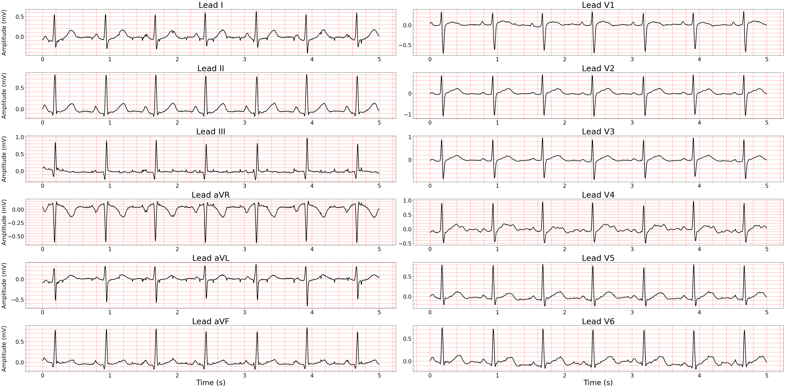
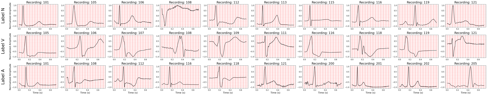
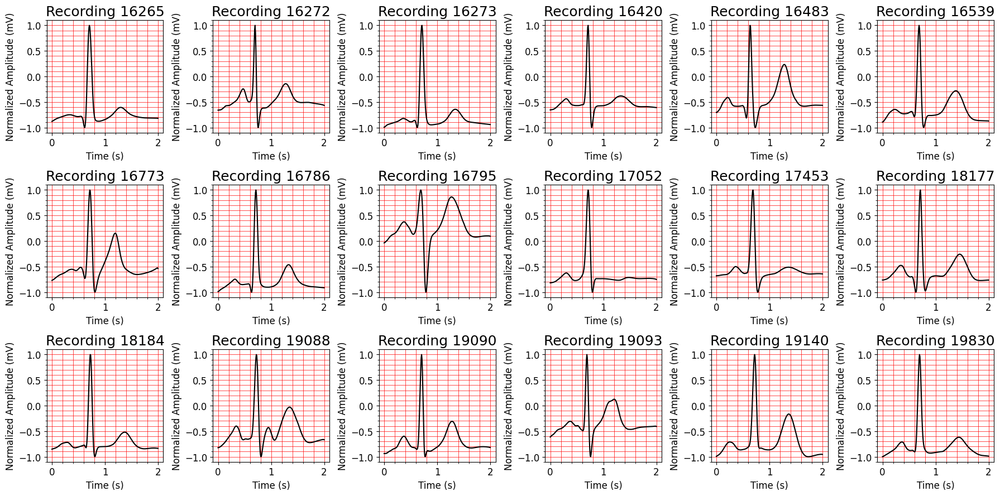
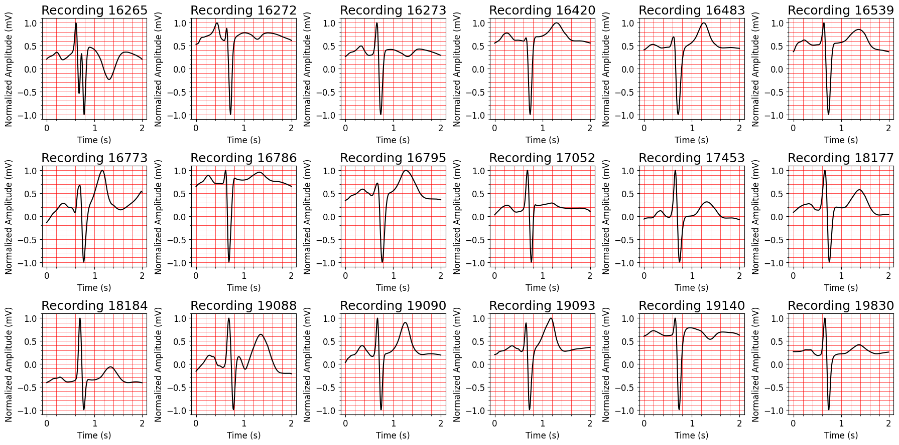
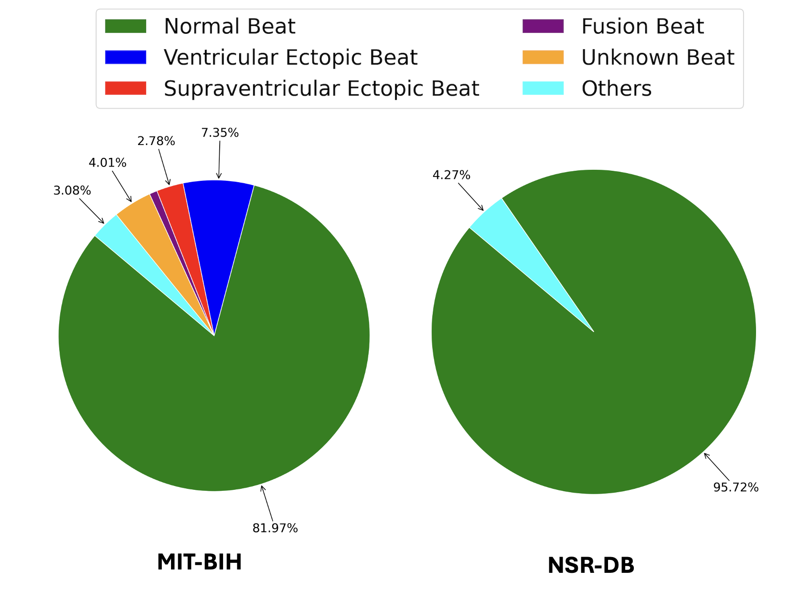
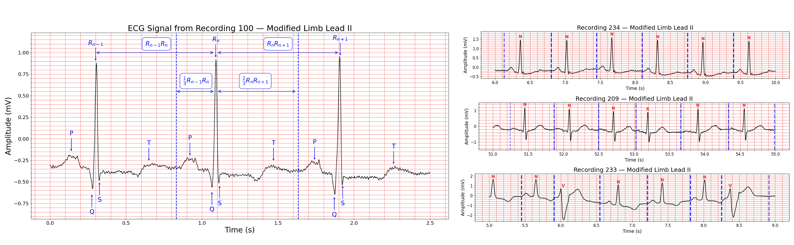
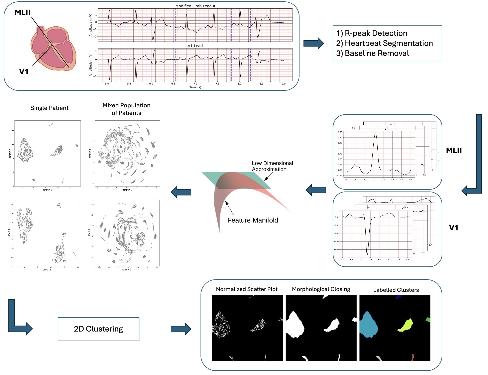

Introduction
A cardiac arrhythmia is an abnormal heart rhythm, in which faulty electrical signaling makes the heart beat too fast, too slow or irregularly. Arrhythmias affect an estimated 1.5–5% of the population, yet they often occur unpredictably and without symptoms. The electrocardiogram (ECG) is the essential non-invasive tool for detecting them, since each arrhythmia changes the timing or shape of the heartbeats it records. Because manual ECG reading is slow and error-prone, many automated methods have been developed, and almost all of them are supervised: they either train a classifier on hand-crafted features or train a deep learning model on labeled heartbeats. Supervised models, however, face three limitations:
A standard 12-lead ECG uses 10 electrodes to record the heart from 12 angles: limb leads I, II, III, augmented leads aVR, aVL, aVF, and chest leads V1–V6. Each heartbeat therefore appears as 12 different waveforms (Figure 1), although not all of them are independent; for example, aVF can be derived from aVR and aVL. Because the waveforms differ, a supervised model must be trained separately for each lead, and datasets rarely include them all: MIT-BIH, the standard benchmark, has only two leads per recording, lead II in most and a second lead (V1, V2, V4 or V5) that varies between patients. Moreover, if electrodes are connected in slightly different positions during the test phase (i.e., after the model has been trained), the signal quality may change, leading to potential model failure.

Beats with the same label can look very different from one person to the next (Figure 2), so a model trained on a population is less reliable on a new patient. The differences are not limited to arrhythmias. The Normal Sinus Rhythm Database (NSR-DB) contains mostly normal beats, recorded on two different leads (ECG 1 and ECG 2). We averaged the heartbeats of each person and compared these averages from person to person (Figure 3). Even in healthy hearts, the average normal beat differs markedly between people in the size of the P and T waves, the shape of the QRS complex and even its polarity.


ECG 1

ECG 2
Training datasets are often biased, both in demographic representation and in the types of arrhythmia they contain. In MIT-BIH, for example, over 80% of the beats are normal, and most of the arrhythmic beats are premature ventricular contractions (PVCs) (Figure 4). As a result, many studies have designed models to detect one specific pattern, most often PVCs, which then cannot classify other types of arrhythmia. In addition, ECG signals are labeled according to different standards, and a supervised model can only predict the labels present in its training data.
| Parameter | MIT-BIH | NSR-DB |
|---|---|---|
| Number of recordings | 48 (our study: 40*) | 18 |
| Subjects | 47 | 18 (5 men, 13 women) |
| Recording length | ~30 min | ~24 h |
| Number of leads | 2 (mostly II, V1) | 2 (ECG 1, ECG 2) |
| Sampling frequency | 360 Hz | 128 Hz |
| R-peak locations | Annotated | Annotated |
| Label for each heartbeat | Yes | Yes (mostly normal) |
| Number of heartbeats | 112,551 (our study: 97,117*) | 1,806,756 |
* For consistency, we selected the MIT-BIH recordings with II as the first lead and V1 as the second, leaving 40 recordings and 97,117 heartbeats.

Our approach. A promising alternative is manifold learning, which rests on the hypothesis that real-world high-dimensional data often lie on low-dimensional latent manifolds within the high-dimensional space. Rather than learning one mapping from population labels, we let each person's heartbeats organize themselves: the beats of each recording are embedded into a 2D latent space, where normal and irregular beats tend to form separable clusters. This requires no labels, and the same procedure applies to any lead.
Heartbeat Segmentation
The first step in real-world analysis is to segment the ECG signal into isolated heartbeats. This requires identifying the R-peaks, which must be detected from the raw signal. Several algorithms exist for this purpose, including those of Christov, Pan–Tompkins and the NeuroKit2 framework. Once the R-peaks are known, the signal must be segmented so that each beat corresponds to exactly one waveform. The simplest approach is a fixed time window, such as 1 s (0.5 s before and after each R-peak), but both normal and arrhythmic heart rate variability can make consecutive beats overlap, contaminating the target signal and complicating downstream analysis. Instead, we use a constant division ratio between R-peaks: each heartbeat consists of the last third of the previous RR interval and the first two thirds of the next one (Figure 5),
Because this produces beats of different lengths, all waveforms are resampled to 256 points (the power of two closest to the average beat length of 267 samples), with an anti-aliasing filter to avoid distortion during downsampling. Finally, baseline wander, the low-frequency drift caused by respiration or electrode movement, is removed by subtracting a median-filtered copy of each beat (kernel size 127) from the original. Because the kernel is large relative to the beat, the filtered copy captures only the slow drift, and subtracting it leaves a baseline-corrected waveform.

Neighbor Embedding Framework
Consider a dataset \(X \in \mathbb{R}^{N \times n}\) of \(N\) samples \(\{\mathbf{x}_i\}_{i=1}^{N}\), each with \(n\) dimensions; in our case, the samples are \(N\) heartbeats, each resampled to \(n = 256\) points. Dimensionality reduction maps \(X\) to \(Y \in \mathbb{R}^{N \times d}\), with embedded points \(\mathbf{y}_i \in \mathbb{R}^{d}\) and \(d \ll n\) (typically \(d = 2\) for visualization). The classic example is PCA, a linear method that rotates the data to align with the directions of greatest variance and keeps the \(d\) largest.
Neighbor embedding methods, such as t-SNE and UMAP, are nonlinear. Instead of variance, they look at the distances and topology between neighboring points and try to preserve as much of the original neighborhood structure as possible, so that curved, separated groups of points remain distinct clusters in lower dimension. Both UMAP and t-SNE follow three similar steps:
-
Build a high-dimensional graph. The weight of the edge between points \(i\) and \(j\) is
$$p_{ij} = f_H\big(d_H(\mathbf{x}_i, \mathbf{x}_j) \,\big|\, \{\mathbf{x}_i\}\big),$$where \(d_H(\cdot,\cdot)\) is a distance metric between two data points (e.g., Euclidean) and \(f_H(\cdot)\) is a kernel that turns this distance into a similarity, so that close points get large weights and distant points get weights near zero.
-
Build a low-dimensional graph in the same way on the embedded points:
$$q_{ij} = f_L\big(d_L(\mathbf{y}_i, \mathbf{y}_j) \,\big|\, \{\mathbf{y}_i\}\big),$$where \(d_L(\cdot,\cdot)\) is the distance between two embedded points (Euclidean in 2D) and \(f_L(\cdot)\) is the kernel that converts it into a similarity.
-
Match the two graphs. We look for the embedding \(\{\mathbf{y}_i\}_{i=1}^{N}\) whose low-dimensional graph best
reproduces the high-dimensional one:
$$\{\mathbf{y}_i^{*}\} = \arg\min_{\{\mathbf{y}_i\}} \; \sum_{i,j} \ell\big(p_{ij}, q_{ij}\big),$$where \(\ell\) measures the mismatch between \(p_{ij}\) and \(q_{ij}\). The \(p_{ij}\) are fixed by the data; only the positions \(\mathbf{y}_i\) are optimized, typically by gradient descent.
t-SNE and UMAP differ only in the choice of \(f_H\), \(f_L\) and \(\ell\):
| Step | t-SNE | UMAP |
|---|---|---|
| 1. High-dim. graph \(f_H\) | Gaussian kernel over all points $$p_{j|i} = \frac{\exp\!\big(-\lVert \mathbf{x}_i - \mathbf{x}_j \rVert_2^2 / 2\sigma_i^2\big)}{\sum_{k \neq i} \exp\!\big(-\lVert \mathbf{x}_i - \mathbf{x}_k \rVert_2^2 / 2\sigma_i^2\big)}$$ $$p_{ij} = \frac{p_{j|i} + p_{i|j}}{2N}$$ \(\sigma_i\) matches a user-set perplexity \(P = 2^{H_i}\), with \(H_i = -\sum_{j} p_{j|i} \log_2 p_{j|i}\). | Exponential kernel on the \(k\)-nearest-neighbor graph $$p_{j|i} = \begin{cases} \exp\!\Big(-\dfrac{d_H(\mathbf{x}_i, \mathbf{x}_j) - \rho_i}{\sigma_i}\Big) & \mathbf{x}_j \in \mathrm{KNN}(\mathbf{x}_i, k) \\[4pt] 0 & \text{otherwise} \end{cases}$$ $$p_{ij} = p_{j|i} + p_{i|j} - p_{j|i}\, p_{i|j}$$ \(\rho_i\) is the distance to the nearest neighbor; \(\sigma_i\) is set so that \(\sum_j p_{j|i} = \log_2 k\). |
| 2. Low-dim. graph \(f_L\) | Student-t kernel, normalized over all pairs $$q_{ij} = \frac{\big(1 + \lVert \mathbf{y}_i - \mathbf{y}_j \rVert_2^2\big)^{-1}}{\sum_{k \neq l} \big(1 + \lVert \mathbf{y}_k - \mathbf{y}_l \rVert_2^2\big)^{-1}}$$ | Unnormalized, tunable kernel $$q_{ij} = \frac{1}{1 + a\,\lVert \mathbf{y}_i - \mathbf{y}_j \rVert_2^{2b}}$$ \(a, b\) are fitted from the user-set minimum distance \(m_d\) between embedded points. |
| 3. Loss \(\ell\) | Kullback–Leibler divergence $$\mathcal{L} = \sum_{i,j} p_{ij} \log \frac{p_{ij}}{q_{ij}}$$ | Binary cross-entropy $$\mathcal{L} = \sum_{i,j} \underbrace{p_{ij} \log \frac{p_{ij}}{q_{ij}}}_{\text{attraction}} + \underbrace{(1 - p_{ij}) \log \frac{1 - p_{ij}}{1 - q_{ij}}}_{\text{repulsion}}$$ |
Method
Our pipeline combines heartbeat-level analysis with unsupervised nonlinear dimensionality reduction (Figure 6). After segmentation, the 256-point heartbeats of each recording are embedded with UMAP into a 2D latent space. Each lead is processed independently with the same settings, so no lead-specific model has to be trained. In this space, normal beats tend to form islands that are separate from those of irregular beats, and when different types of irregular beats are sufficiently different in morphology, they can also fall into islands of their own. These islands can then be clustered either with classical algorithms, such as k-means or HDBSCAN, or by separating them with computer vision techniques, which allows the step to be automated.

Population Analysis
We first applied the method to populations, pooling the heartbeats of all people in each of three datasets: MIT-BIH (40 people), NSR-DB (18 people) and AF-DB (23 people). After running both UMAP and t-SNE, we observed that the heartbeats of each person tend to cluster together, forming visually separable clusters in 2D. We then relabeled the embeddings by arrhythmia class and sex, and the separation between people still appeared to be the most distinguishing factor. Each recording has two leads (II and V1 for MIT-BIH; unspecified leads for NSR-DB and AF-DB), and the same pattern appears on both leads. The fact that signals from different people are so distinctly separated in the 2D latent space suggests that heartbeats are highly individual-specific and can act as a unique fingerprint. Consequently, training a supervised model on signals from other people may not be effective for detecting arrhythmias in a new individual.
Personalized Analysis
We then applied the same pipeline to the heartbeats of each person separately. In most recordings, normal and irregular heartbeats form separate clusters in the 2D embedding. Normal heartbeats are also often divided into several clusters, owing to differences in beat amplitude or in the timing of individual peaks, which shows that the embedding can capture variation even within a single class. To show how useful the 2D embedding is for downstream arrhythmia classification, we also trained a simple classifier (k-nearest neighbors) on top of it. Select a recording below.
Software Demo
To make the analysis easy to explore, we built the ECG Manifold Viewer, an interactive browser-based tool for exploring heartbeat embeddings. It runs entirely in the browser; open it in a new tab below.
BibTeX
@article{vazifeh:26,
title = {Manifold learning for personalized and label-free detection of cardiac arrhythmias},
journal = {Informatics in Medicine Unlocked},
volume = {64},
pages = {101770},
year = {2026},
issn = {2352-9148},
doi = {https://doi.org/10.1016/j.imu.2026.101770},
url = {https://www.sciencedirect.com/science/article/pii/S2352914826000407},
author = {Amir Reza Vazifeh and Jason W. Fleischer},
}